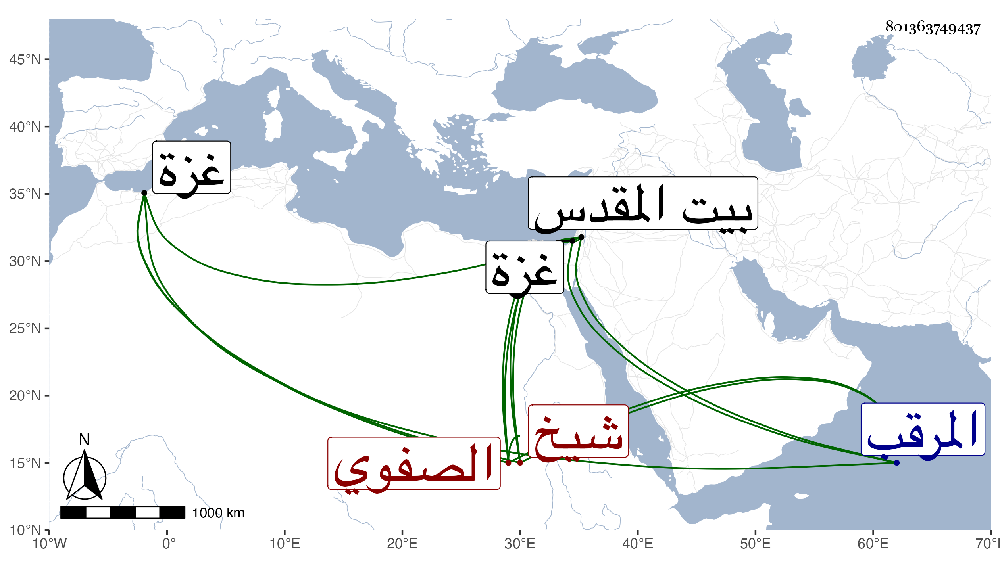

0902Sakhawi.DawLamic.ITO20230111-ara1.EIS1600.801363749437
Biography ID: 801363749437
1189
شيخ الصفوي ويعرف بشيخ الخاصكي . كان من أمراء الظاهر برقوق وأعيان دولته ألبسه في المحرم سنة ثمانمائة نيابة غزة فخرج من يومه إلى الخانقاه السرياقوسية ثم استعفى من الغد وسأل في الاقامة بالقدس بطالا فأجيب وتوجه إليه فلم يلبث أن نقل إلى حبس المرقب لشكوى المقادسة من تعرضه لأبنائهم واكثاره من الفساد ومات به في ربيع الآخر سنة إحدى . ذكره المقريزي في عقوده وطول العيني ترجمته فقال كان شابا جميل الصورة محتشما سخيا كثير المعرفة والذوق قليل الاذى مشاركا في بعض المسائل بل يحفظ عقيدة الطحاوي ، ولذا كان صحيح العقيدة محبا في العلماء ومجالستهم يلقى عليهم المسائل ثم تغير وأقبل على الملاهي وعشرة المساخر ، ونصحه السلطان وغيره مرارا فما أفاد ، وآل أمره إلى أن نفاه السلطان وأبعده ، قال وصنفت له شرحا لطيفا لتحفة الملوك ، وصدر ترجمته بشيخ الصفوي الخاصكي أمير مجلس قلت وأظنه شيخ الخاصكي الماضي فيحرر .
